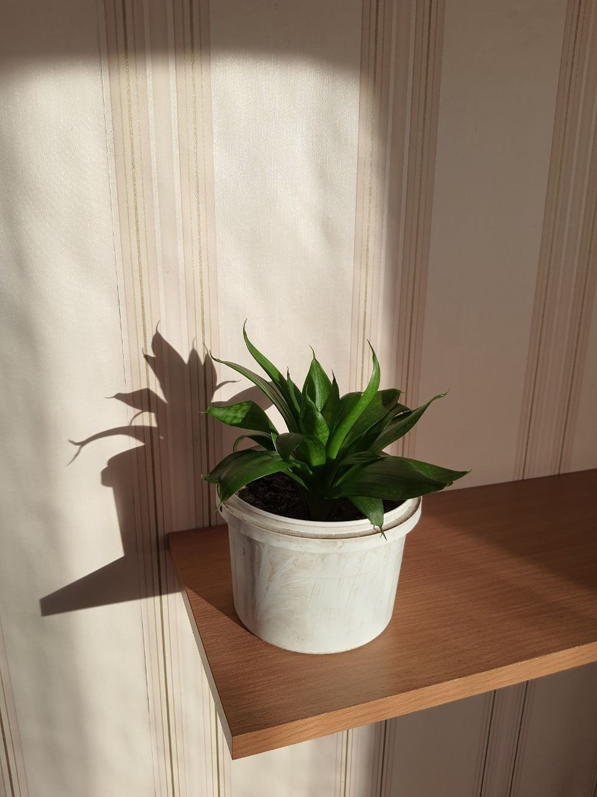

History
За нею легко доглядати, вона не вимоглива. Але... Колись в мене вже був досвід розмноження цього виду.
Після пересадки, всі 3 рослини поступово пропали... Тому тепер я з обережністю до неї ставлюсь. І досі боюсь пересадити в гарний горщик...
Information
Згодом...

Якщо чесно, я до кінця не впевнена, чи це точно Сансевієрія... Але припустимо (24.06.22)